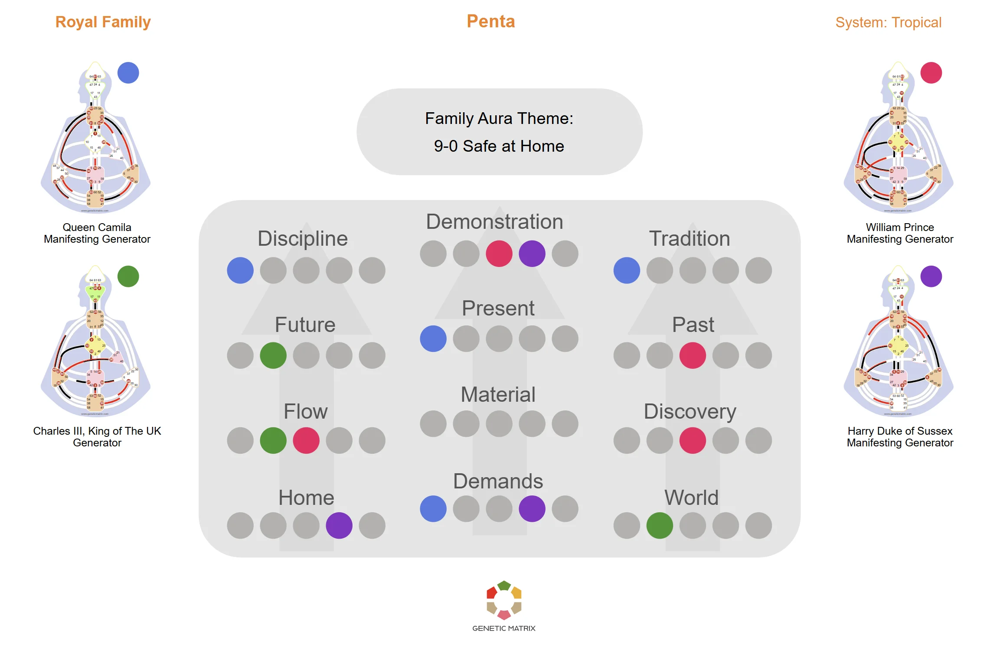

Wenn 3 bis 5 Menschen einen Lebensraum teilen, entsteht eine transpersonale Form namens Familien-Penta. Sie hat ihre eigene Mechanik, die individuelle Designs überschreibt und formt, wie die Gruppe funktioniert.
Die Penta ist eine transpersonale Energieform, die entsteht, wenn 3 bis 5 Menschen innerhalb des aurischen Kontakts zusammen sind. Sie ist nicht einfach die Kombination individueller Charts. Die Penta ist ihre eigene aurische Einheit und funktioniert nach logischen mechanischen Regeln. Sie arbeitet durch eine spezifische Reihe von Toren und Kanälen, die bestimmte Funktionen aus den Individuen innerhalb der Gruppe herausziehen.
Im Kontext der Familie bestimmt die Penta, wie die Gruppe funktioniert. Sie organisiert Rollen, zieht nach Ressourcen und konditioniert alle in der Gruppe, um die Bedürfnisse der pentischen Form zu erfüllen. Das Verständnis der Familien-Penta hilft zu erklären, warum Individuen sich innerhalb des Familienlebens oft anders verhalten als allein.
3 bis 5 Menschen in aurischem Kontakt
Die Familien-Penta entsteht automatisch, wenn 3 bis 5 Menschen denselben Lebensraum teilen und sich innerhalb des aurischen Felds der anderen befinden. Es erfordert keine bewusste Anstrengung. Sobald drei Menschen in der Nähe zusammenleben, werden die mechanischen Anforderungen der Penta aktiviert und beginnen, jedes Mitglied zu konditionieren, indem sie ihre Penta-aktivierten Tore und Kanäle in eine kohärente, einseitige Kraft ziehen.
Das Betriebssystem der Gruppe
Die Penta funktioniert durch eine spezifische Reihe von Kanälen, die ihre mechanische Struktur bilden. Diese Kanäle repräsentieren die Kernfunktionen, die die Gruppe zum Überleben und Funktionieren braucht: Ressourcenverwaltung, Rollenaufteilung, Prioritätensetzung und Aufrechterhaltung des Zusammenhalts. Jeder Kanal benötigt Aktivierung durch ein oder mehrere Gruppenmitglieder, um eine funktionale Penta ohne Lücken und die Verzerrung zu bilden, die diese Lücken erzeugen können.
Was besetzt wird und was konditioniert wird
Wenn das Chart einer Person einen Penta-Kanal oder ein Tor aktiviert, füllt diese Person natürlich diese Rolle innerhalb der Familie. Wenn niemand in der Gruppe die Aktivierung hat, bleibt die Rolle in der Penta undefiniert und erzeugt eine Lücke. Diese Lücke erzeugt Konditionierungsdruck, der jedes Gruppenmitglied dazu ziehen kann, eine Rolle zu füllen, die nicht natürlich ihre ist, was Inkonsistenz und mögliche Verzerrung dieser Funktion innerhalb der Penta bringt.
Reifung in der Familieneinheit
Kinder entwickeln sich noch innerhalb des Familienfelds und können funktionale Rollen innerhalb der Penta übernehmen, die nicht ihren eigenen reifen Ausdruck widerspiegeln. Was als feststehendes Verhalten erscheint, kann stattdessen das Ergebnis sein, dass das Kind die Bedürfnisse der pentischen Form erfüllt. Zum Beispiel kann ein Kind mit Tor 15 der Klebstoff werden, der die Familien-Penta zusammenhält, und wenn dieses Kind abwesend ist, kann sich die Familie natürlich auflösen.
Wie die Familie mit materiellen Bedürfnissen umgeht
Eine der Hauptfunktionen der Penta ist die Ressourcenverwaltung. Dies umfasst materielle Ressourcen wie Nahrung, Geld und Unterkunft sowie energetische Ressourcen wie Zeit und Aufmerksamkeit für diese kritischen Angelegenheiten. Die mechanische Struktur der Penta bestimmt, wie Ressourcen innerhalb des Haushalts gesammelt, verteilt und priorisiert werden.
Wie die Gruppe Informationen teilt
Die Kommunikation innerhalb der Penta folgt mechanischen Mustern statt persönlichen Vorlieben. Bestimmte Kanäle bestimmen, wie Informationen innerhalb der Gruppe fließen: wer spricht, wer gehört wird und welche Themen Priorität haben. Wenn diese Kanäle von keinem Mitglied definiert sind, können Kommunikationslücken Missverständnisse und mögliche Reibung erzeugen.
Wer führt und wer folgt
Die Penta hat ihre eigene Machtstruktur, die sich von dem unterscheiden kann, was die individuellen Charts nahelegen würden. Gleichzeitig sortiert sie natürlich Relevanz nach Alter und Reife und bewahrt die natürliche Familienhierarchie. Eine Person, die eine Führungsrolle in der Penta trägt, hat möglicherweise nicht dieselbe Rolle in ihrem eigenen Design. Umgekehrt kann jemand mit starker individueller Autorität sich in einer unterstützenden Rolle innerhalb der Familiendynamik wiederfinden.
Hinzufügen oder Verlieren eines Mitglieds
Die Penta ist empfindlich gegenüber Veränderungen in der Mitgliedschaft. Wenn jemand die Gruppe betritt oder verlässt, verschiebt sich die gesamte mechanische Struktur. Ein neues Mitglied kann zuvor leere Rollen füllen und die Dynamik für alle verändern. Wenn ein Mitglied geht, können Rollen, die besetzt waren, plötzlich leer werden und Druck auf die verbleibenden Mitglieder ausüben, zu kompensieren.
Hinweis
Die Penta ist nicht persönlich. Sie ist eine mechanische Form, die die Individuen in ihr konditioniert. Wenn Sie bemerken, dass Sie sich innerhalb Ihrer Familie anders verhalten als allein, ist die Penta wahrscheinlich Teil des Grundes. Das Bewusstsein für Penta-Mechanik kann Schuldzuweisungen reduzieren und größeres Verständnis innerhalb des Haushalts unterstützen.
Ein Familien-Penta-Chart zeigt, wie die Designs von 3 bis 5 Menschen sich zu einer gemeinsamen transpersonalen Form verbinden. Es zeigt, welche Rollen besetzt sind, wo Lücken bleiben und wie die Mechanik der Penta das Funktionieren des Haushalts formt.

Beispiel eines Familien-Penta-Charts, das zeigt, wie individuelle Aktivierungen zur gemeinsamen Familienform beitragen. Klicken Sie zum Vergrößern.
Die Familien-Penta ist eine transpersonale Energieform, die entsteht, wenn 3 bis 5 Menschen innerhalb des aurischen Kontakts zusammen sind. Sie hat ihre eigene mechanische Struktur mit spezifischen Toren und Kanälen, die funktionale Rollen aus den Menschen innerhalb der Gruppe herausziehen. Die Penta konditioniert jeden in der Gruppe und bestimmt, wie die Familie funktioniert, von der Ressourcenverwaltung bis zu Kommunikation und Machtdynamik.
Die Penta benötigt mindestens 3 Menschen und höchstens 5. Unter 3 bildet sich die Penta nicht. Über 5 entsteht eine zweite Penta. Welche Designs vorhanden sind, bestimmt, wie die Rollen der Penta besetzt werden und wo Lücken bleiben.
Kinder entwickeln sich noch innerhalb des Familienfelds und können funktionale Rollen innerhalb der Penta übernehmen, die nicht ihren eigenen reifen Ausdruck widerspiegeln. Was als feststehendes Verhalten erscheint, kann stattdessen das Kind sein, das die Bedürfnisse der pentischen Form erfüllt. Das Bewusstsein hierfür kann Eltern helfen, zwischen Familienmechanik und der differenzierten Natur des Kindes zu unterscheiden.
Ja. Die Penta verändert sich, wann immer ein Mitglied die Gruppe betritt oder verlässt. Ein neues Mitglied kann zuvor leere Rollen füllen und die Dynamik für alle verändern. Wenn ein Mitglied abwesend ist oder geht, können Rollen, die besetzt waren, plötzlich offen werden und Druck auf die verbleibenden Mitglieder ausüben, zu kompensieren.
Ja. Genetic Matrix bietet Werkzeuge zur Erstellung eines Familien-Penta-Charts durch die Kombination der individuellen Designs der Menschen in einem Haushalt. Dies zeigt, welche Penta-Rollen besetzt sind, welche offen sind und wie die mechanische Struktur der Gruppe jede Person innerhalb der Familie konditioniert.
Wenn zwei Menschen zusammenkommen, entsteht ein neues Design. Erkunden Sie die Mechanik einer Eins-zu-Eins-Beziehung.
Sehen Sie, wie dieselbe Penta-Mechanik in kleinen Geschäftsteams angewendet wird, mit für den Arbeitsplatz angepasster Terminologie.
Entdecken Sie die neun Energiezentren des Bodygraphs und wie Definition Ihr Design formt.
Get Advanced or Pro um ein Familien-Penta-Chart zu erstellen und die mechanischen Dynamiken zu erkunden, die Ihren Haushalt formen. Advanced beinhaltet grundlegende Penta-Charts. Pro beinhaltet eine vollständige Suite von Familienanalyse-Tools.
Get Advanced or Pro →